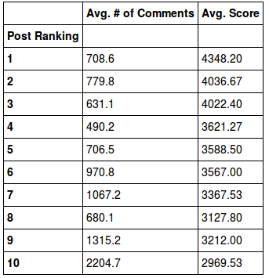
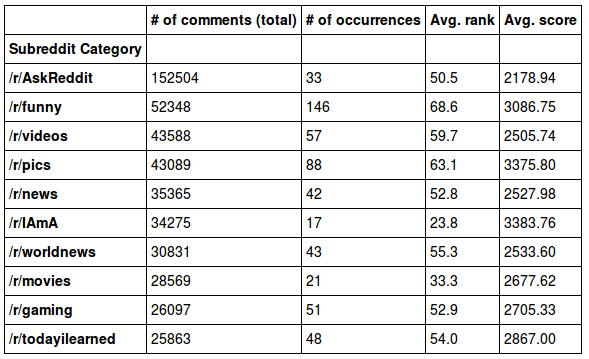
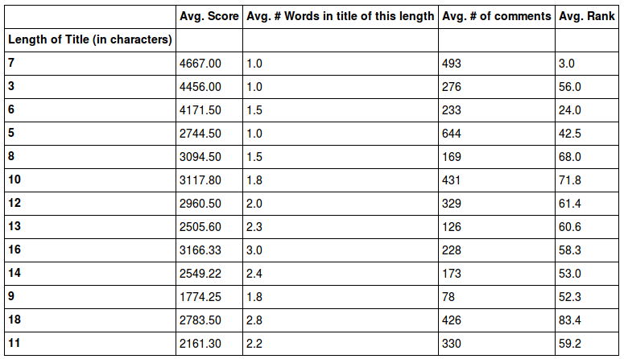
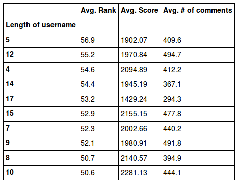

Reddit is a website where a huge community of users submit content and vote (i.e. upvote or downvote) on others' submitted content. The premise of this is simple; the top 25 or so front page posts change hourly thanks to the active community. There are smaller communities, or subreddits, within the Reddit website where users with similar interests can post/vote on content related to a specific category. With our project, we wanted to delve into the posts that make it to the front page and see what types of patterns we could deduce from front page post data.
The data gathering and wrangling process was made up of 3 parts: a Python script, a cron job, and shell scripts. We used the Python script and the cron job to obtain the data, then formatted it into .csv files and used the shell scripts to clean it for analysis.
The Python script we wrote required a parser to comb through the raw html text that we scraped. We used the lxml module to satisfy this need. It provided us with several library functions that made extracting the information we desired much easier. We used the built-in Python urllib2 library to perform the actual scraping, and used a GET parameter in the URL to grab the top 100 posts. The data was then aggregated and formatted into a .csv file.
The purpose of the cron job was to automate the execution of the Python script so that we wouldn't have to run it manually. We directed the utility to run hourly so that we could have multiple datasets from each day that we could use in case there was an issue. We ran the automated script for a total of 14 days.
The set of shell scripts were used to clean the data and prepare it for data analysis. We had to remove extraneous spacing in the scraped data and standardize formats by deleting extra words (e.g., the number of comments would be '5' instead '5 comments').
In order to perform data analysis on the data that we scraped from Reddit, we used IPython for our language and environment. We used the Pandas and NumPy libraries to perform the bulk of our analysis.
Our basic mentality was to identify patterns and try to find if some characteristic in the data caused a spike in popularity (whether that popularity was measured in the ranking of the posts, the scores of the posts, the number of comments on the posts, or something else). To do this, we had to iterate over all the data we scraped and keep track of various pieces of information associated with the category that we were focusing on.
Since we stored the data that we scraped from Reddit in a series of .csv files, it was a simple matter to import it into Pandas as a DataFrame object. What is a DataFrame object? In order to understand that, you need to understand what makes up a DataFrame.
NumPy is a 3rd party library in Python that is quite popular. The most important aspect of NumPy is its array. A NumPy array provides a more intuitive way to represent a multi-dimensional array than the standard Python package can do.
Pandas is also a 3rd party library in Python that enjoys widespread usage. There are two main data structures in Pandas: the Series object and the DataFrame object. You can think of a Series as a 1-dimensional NumPy array (with a few additional features). You can think of a DataFrame as a dictionary of Series objects. In both Series and DataFrames, you can use custom column and index names, as well as custom index ordering. This last feature is crucial to data analysis.
A DataFrame is an easy and intuitive way to represent a table. All of the data analysis we performed involved using DataFrames. An especially powerful feature that DataFrames inherit from NumPy is the ability to perform boolean indexing. This allows us to query for posts with specific properties in a succint manner. For example, suppose that we wanted to find all posts that had a top 10 ranking. If the name of our DataFrame is df, this is the command we would need to use: df[df['rank'] <= 10].
Two other important tools that we used were regular expressions and heaps. Regular expressions, or regex for short, is used for pattern matching in strings of characters. An example of what we used regex for in our project was to identify the type of content that a post linked to. E.g., we searched for posts with the strings ".png" or ".jpg" to identify what posts were of images. The heap is a common data structure in computer science that is used to order data based on max or min values. We used heaps to sort the content of many of our tables. For instance, to identify which subreddits had the most comments, we inserted the subreddit and its corresponding number of comments into a heap in order to sort it in ascending order with the subreddit that had the highest number of comments on top.
Note: to access the IPython notebook click here
We primarily used boolean indexing to calculate the table of scores. We decided to group the indices in the thousands range (0-999, 1000-1999, etc...) in order to present the data in a clear and concise fashion. Since we already had our dataset present, we knew that no post achieved a score of 6000 or higher. Therefore it was simple to find the posts with a score >= 5000. The other ranges proved to be more tricky. Initially, we thought that we could use conjuction and disjunction within the boolean indexing, but the semantics of the operation did not turn out as we anticipated. We found a work-around by applying another tier of boolean indexing to the data. For example, to find the posts with a score that fit the criteria of 4000 <= score < 5000, we first found all the posts that had a score >= 4000 and stored those posts in a DataFrame. Then we applied the second tier of boolean indexing to that DataFrame and found all the posts (in the set of posts with score >= 4000) that had a score < 5000.
|  |
This motivation behind this table was to see how the rank of a post affected the number of comments and the score associated with the post. We used boolean indexing to aggregate the top 100 ranks of the Reddit posts. As our datasets only included the top 100 posts of each day, it was a little unnecessary to use boolean indexing for this. Originally we were only going to find the posts of the top 10 ranks of the Reddit posts, but decided to expand to the entire dataset after seeing the capabilities of D3.js. The simplest way of adapting the code was to adjust the boolean indexing parameters from rank <= 10 to rank <= 100. We then stored each rank in a list to be used as indices in the table. After that, we iterated through the posts and kept track of the number of comments and the score for each. |
This table was meant to show the relationship between the content type and the domain referenced in the post, along with the associated score, rank, and number of comments. The domain is derived from the URL that the Reddit post links to for its content. We began by storing the data in a dictionary, with the key being the domain name and the values being a list that was composed of the count (the number of times a domain was used in the dataset, so we could calculate averages), the aggregated score, rank, and number of comments, and the content type associated with that particular domain. In order to identify the content type, we had to perform regex on the URL that the Reddit post linked to. The regex we used involved named groups. Basically, we pre-compiled a regex pattern for each of the 4 content types that we were categorizing (images, webpages, Reddit posts, and videos). Each pattern was put in a named group to make it easy to identify which regex produced a match. Then we ran the dataset against each of the patterns, keeping track of when a match occurred and storing the data accordingly.
The sorting of this table was tricky as well. We had to utilize both primary and secondary sorting in the heap to order the table appropriately. The way that Python's heapq performs this sorting is by passing in a tuple when inserting into the heap. We passed in an integer that mapped to each content type in a dictionary as the first element in the tuple, the number of occurrences associated with the domain as the second element in the tuple, and the domain name as the final element (this final element was needed more so that the appropriate data could be accessed later in the code than for sorting). After that, we aggregated the data to line up together in a parallel fashion across several different lists, and then stored those lists into a dictionary that could be passed in as input to create the DataFrame that represented the finalized product.
|  |
For this table we displayed the subreddits with the highest number of comments. This particular dataset required some of the data to be cleaned within the Python code. The reason that this wasn't handled in the Data Wrangling and Gathering portion of the project was because it was a lot simpler to handle the cleaning that we needed to do in Python than to do it with the Unix tools. Some of the subreddits didn't have /r/ preprended in front of it, so it was a simple matter to add it in the Python code while iterating over the subreddit column. Doing it with the Unix tools would have been more complex because the regex would not have been isolated by column and would have produced false positives among the other columns of data. The actual data analytics for this table didn't require anything new from what the previous tables required. It involved iterating through the data while keeping track of subreddits and the associated number of comments, rank, score, and number of occurrences. We used a heap to sort the data based on highest number of comments, and then plugged all the data into a DataFrame. |
|  |
Does the length of a title have an impact on how popular a post on Reddit is? That was what we were wondering when we created this table. It invovled all the standard mechanisms from before (dictionaries, heaps, regex, etc...). The one additional column of data that was required was the number of words in the title. We calculated it by using regex to count the number of spaces in the title, and then adding one to that value (because 2 words will have 1 space in between them, 3 words have 2 spaces in total, etc...). It initially appeared that there might have been a correlation in the data, but after producing the visualization we determined that there wasn't one. |
|  |
Borrowing the concept from the previous table, we wondered if the length of the username had an impact on how popular a post on Reddit was. We used all the tools from before to produce this dataset. With it, we had created a table for each of the main categories from the datasets that we scraped from Reddit: scores, rankings, domains and content, subreddit categories, the title, and the username. This ended up being the only dataset that we did not produce a visualization for because we couldn't derive any patterns from this dataset by looking at the table (i.e., there is no correlation between length of the username and popularity). |
The front page posts are the best-of-the-best of reddit, as voted on by users. We saw most of the posts fall between 2000 - 3000 votes (aka. upvotes) but sometimes posts even had as many as 4000 or 5000! So just how common were those kinds of numbers?
There is not a standard bell type curve that one might expect; however we confirmed our earlier suspicion that getting 4000+ upvotes is much less common than getting only 1000 or 2000. Very few even make it to 5000+!
The posts that made it to the front page were viewed more and upvoted more than any of the thousands (even tens and hundreds of thousands) of posts submitted on any given day. Reddit's ranking algorithm combines a "freshness" weight, along with the number of upvotes to calculate the overall rank of a post.
As you can see by toggling the bar chart options (above), the number of comments received by posts don't seem to follow any pattern. However, the average number of upvotes received does seem to follow a linearly decreasing pattern (at least for the first 50 or so posts). Additionally, front page posts receive many less comments than upvotes, meaning users are more apt to upvote a post but not comment on it.
Posts that make it to the front page usually have many thousands of upvotes (sometimes as high as 5000) but Reddit's algorithm also accounts for a timeliness factor. The density of votes leading up to the present time also means a post may make it to the front page. Of all the front page posts, just how many make it to 3000, 4000 or even 5000 upvotes? And do the majority of front page posts even need that many to make it there in the first place?
Subreddits allow Reddit users to group their posts by category and subject matter, but just how popular are some subreddits? Toggle through the popularity measures below to see how the most popular subreddits stack up against each other when it comes to appearing on front page posts.
As you can see by toggling through the bubble chart options (above), there are certainly subreddits which hit the front page more frequently than others. And of the subreddits that make it to the front page, there are definitely ones that engage the community more (shown by number of comments). When it comes down to average rank and score, subreddits which make the front page tend to have a relatively balanced number of upvotes and ranking among all the posts on the front page.
Reddit allows users to post content from many different sources. Video sites, like Youtube, and image sharing sites, like Imgur, are especially popular. Users may also post their own thoughts as text (called a 'selfpost'). Click on the visualization below to see how popular certain types of posts are (the bigger the circle, the more popular its content is).
It is clear that images, webpages and selfposts make it to the front page more than videos, but in terms of number of comments, images lag behind all the others. When we dig down into each type of post we see more polarizing splits in which sources these images, videos, wepages and selfposts come from.
Reddit users are free to choose any title they want to for their post. Post titles range from short, one word adjectives, to longer, multi-sentence descriptions. But how exactly does the length of a title affect how well it does in terms of popularity?
There doesn't seem to be any correlation between title length and average rank, average upvotes or average number of comments